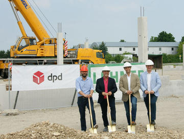

Aktuelle Presseaussendungen. |
Up-to-date Informationen über unsere Aktivitäten, Produktneuigkeiten und Serviceleistungen.
Presseaussendungen
• Erste A1 Paket Station an einem Bahnhof
• Innovativer Service für Pendler
• Paketdienstleister DPD und GLS nutzen ebenfalls A1 Paket Station
• Badener Wirtschaft profitiert
• Einfache Handhabung mittels App
• 24/7 offen
„Wir freuen uns, dass wir gemeinsam mit unseren Partnern ÖBB, DPD und GLS in Baden unsere erste A1 Paket Station an einem Bahnhof eröffnet haben“, so A1 CEO Marcus Grausam. Erstmals wird eine A1 Paket Station von mehreren Paketdienstleistern und zusätzlich noch von lokalen Unternehmen und Privatpersonen genutzt. „Damit bieten wir der lokalen Wirtschaft und natürlich der Badener Bevölkerung eine sehr komfortable und zugleich zeitsparende Möglichkeit, ihre Pakete zu hinterlegen bzw. abzuholen.“
Für lokale Unternehmen und deren Kunden verlängert die A1 Paket Station quasi die Öffnungszeiten, denn sie ist rund um die Uhr zugänglich und man kann seine Pakete dann abholen, wenn man Zeit dafür findet. Zudem können die beiden Paketdienstleister DPD und GLS die A1 Paket Station ebenfalls als alternativen Zustell-Ort nutzen, falls der Empfänger nicht zuhause ist.
„Wir wollen unseren Fahrgästen den Alltag erleichtern. Dass man sein Packerl und Bestellungen nun direkt am Bahnhof abholen kann, spart Zeit und Fahrwege“, erklärt Silvia Angelo, Vorstandsdirektorin der ÖBB-Infrastruktur AG.
Rainer Schwarz, DPD Geschäftsführer erläutert: „Für uns von DPD Austria ist dies eine weitere Serviceleistung für unsere Kunden, denen wir damit die Möglichkeit bieten, ihr Paket an einem Verkehrsknotenpunkt und rund um die Uhr abzuholen. Wir begrüßen diese moderne Lösung auch deshalb, da sie zeigt, wie einfach es sein kann, dass mehrere Paketdienstleister in einer gemeinsamen A1 Paket Station vertreten sind“.
Prokurist Eberhard Thiele, GLS District Sales Manager: „Wir nehmen gerne an diesem Projekt teil, denn die Lage der Paket Stationen direkt an Bahnhöfen ist sehr vorteilhaft und sie sind offene Systeme. Dies ist zugleich konsumentenfreundlich und innovativ.“
Bürgermeister Stefan Szirucsek zum neuen Angebot in Baden: „Das Paketservice von A1 bietet Unterstützung für verschiedenste Situationen des Alltags, in denen rasche, unkomplizierte Lösungen gefragt sind. Die zeitgemäße, innovative Technologie ist einfach zu handhaben und passt hervorragend zur dynamischen Ausrichtung unserer Stadt.“
Und so einfach funktioniert es
Die Kommunikation zwischen Paketdienstleistern und ihren Kunden erfolgt direkt. Die Abholung von diesen Paketen ist für die Kunden kostenlos. Privatpersonen und Unternehmen können einfach mit der A1 Paket App ein Fach mieten und mittels Kreditkarte bezahlen. Sender und Empfänger bekommen einen QR Code für die Öffnung des Faches direkt übermittelt, entweder in der A1 Paket App oder per SMS und E-Mail bei nicht registrierten Kunden. Bis Jahresende können die Fächer gratis genützt werden, danach kosten sie je nach Größe pro Tag 1-4 Euro.
„Wir werden in den nächsten Wochen weitere A1 Paket Stationen bei Bahnhöfen in Niederösterreich, der Steiermark und in Kärnten in Betrieb nehmen. Für unseren weiteren Rollout sind wir offen für zusätzliche Kooperationen mit Paketlogistikern, Gewerbe und Standortgebern,“ kündigt Grausam abschließend an.
Leopoldsdorf bei Wien, 3. Oktober 2019. DPD Austria – Österreichs führender privater Paketdienst – hat sein Depot in Sulz in Vorarlberg um eine Million Euro ausgebaut: Die Frächterhalle wurde um 20 Verladestellen erweitert. Dadurch können pro Tag um 5.000 Pakete mehr bewegt werden, die Abwicklung ist in einer kürzeren Zeit möglich und die Pakete kommen früher zu den Empfängern. Außerdem wurden durch diese Erweiterung zusätzlich 34 Arbeitsplätze geschaffen – davon entfallen 30 auf die Zusteller.
Foto: DPD Austria
Über DPD Austria
DPD Austria (DPD Direct Parcel Distribution Austria GmbH) ist Österreichs führender privater Paketdienst und Teil der DPDgroup, dem zweitgrößten internationalen Paketdienstleister in Europa. 1988 als erster privater Paketdienst (damals APS-Austria Paket System) gegründet, stützt sich DPD auf die Logistikinfrastruktur seiner Gesellschafter – Österreichs führenden Speditionen Gebrüder Weiss, Lagermax und Schachinger. DPD Austria bietet ein erstklassiges Leistungsspektrum für die nationale und internationale Paketdistribution. Österreichweit sind rund 1.700 LogistikexpertInnen für DPD tätig. Das Unternehmen verfügt über eine Transportflotte von 1.200 Fahrzeugen, die im Jahr 2018 mehr als 50 Millionen Pakete beförderten. Das DPD Pickup Paketshop Netzwerk umfasst mittlerweile über 1.400 Paketannahme und -abholstellen in ganz Österreich. Durch innovative Technologien, lokales Know-how und erstklassigen Kundenservice bietet DPD bestmögliche Paketdienstleistungen für Versender und Empfänger. Als Teil der DPDgroup kann DPD Austria auf das stärkste Straßennetzwerk Europas zurückgreifen, hat Zugang zu rund 40.000 Pickup Paketshops in ganz Europa und bietet eine Zustellung in 230 Länder/Territorien weltweit an. In diesem Netzwerk arbeiten 75.000 VersandexpertInnen um täglich mehr als fünf Millionen Pakete zu bewegen.
Rückfragen richten Sie bitte an:
BRUGGER DENGG PR
Dr. Hanna Brugger-Dengg
Leopoldsdorf bei Wien, 1. Oktober 2019. In der Seestadt Aspern in Wien hat DPD Austria – Österreichs führender privater Paketdienst – mit seinem ersten City Hub vor drei Jahren ein starkes Zeichen für innovative Logistik im urbanen Raum gesetzt. Die Zustellung der Pakete zum City Hub erfolgt mit einem E-Sprinter und die Verteilung in der Seestadt durch Lastenfahrräder. Die Drei-Jahres-Bilanz kann sich sehen lassen: Vom City Hub aus wurden rund 35.000 Pakete zugestellt. Durch diese umweltfreundliche Paket-Anlieferung und -Zustellung wurden rund 19,5 Tonnen CO2-Emmissionen vermieden und zudem rund 7.500 Liter Diesel eingespart. Der City Hub erfreut sich unter den Seestädtern auch als Abholstation großer Beliebtheit: Pro Jahr werden zirka 15.000 Pakete hinterlegt bzw. von den Empfängern zur Abholung dorthin „umverfügt“. DPD City Hubs gibt es auch in Linz und Salzburg.
E-Bike
Über DPD Austria
DPD Austria (DPD Direct Parcel Distribution Austria GmbH) ist Österreichs führender privater Paketdienst und Teil der DPDgroup, dem zweitgrößten internationalen Paketdienstleister in Europa. 1988 als erster privater Paketdienst (damals APS-Austria Paket System) gegründet, stützt sich DPD auf die Logistikinfrastruktur seiner Gesellschafter – Österreichs führenden Speditionen Gebrüder Weiss, Lagermax und Schachinger. DPD Austria bietet ein erstklassiges Leistungsspektrum für die nationale und internationale Paketdistribution. Österreichweit sind rund 1.700 LogistikexpertInnen für DPD tätig. Das Unternehmen verfügt über eine Transportflotte von 1.200 Fahrzeugen, die im Jahr 2018 mehr als 50 Millionen Pakete beförderten. Das DPD Pickup Paketshop Netzwerk umfasst mittlerweile über 1.400 Paketannahme und -abholstellen in ganz Österreich. Durch innovative Technologien, lokales Know-how und erstklassigen Kundenservice bietet DPD bestmögliche Paketdienstleistungen für Versender und Empfänger. Als Teil der DPDgroup kann DPD Austria auf das stärkste Straßennetzwerk Europas zurückgreifen, hat Zugang zu rund 40.000 Pickup Paketshops in ganz Europa und bietet eine Zustellung in 230 Länder/Territorien weltweit an. In diesem Netzwerk arbeiten 75.000 VersandexpertInnen um täglich mehr als fünf Millionen Pakete zu bewegen.
Rückfragen richten Sie bitte an:
BRUGGER DENGG PR
Dr. Hanna Brugger-Dengg
Leopoldsdorf bei Wien, 29. August 2019. In Linz feiert der City Hub von DPD Austria – Österreichs führender privater Paketdienst – seinen zweiten Geburtstag und blickt zufrieden auf die beiden Jahre zurück: Vom City Hub aus wurden innerhalb von zwei Jahren rund 140.000 Pakete mit E-Sprinter und Lastenfahrrädern zugestellt. Mit dieser umweltfreundlichen Paket-Zustellung wurden rund 18,4 Tonnen CO2-Emmissionen vermieden. Zusätzlich werden im City Hub Linz pro Jahr zirka 14.000 Pakete hinterlegt bzw. von den Empfängern zur Abholung dorthin „umverfügt“. Zum Versenden werden jährlich mehr als 3.000 Pakete in den City Hub gebracht. DPD City Hubs gibt es auch in Wien und Salzburg.
City Hub Linz
Foto: DPD Austria
Über DPD Austria
DPD Austria (DPD Direct Parcel Distribution Austria GmbH) ist Österreichs führender privater Paketdienst und Teil der DPDgroup, dem zweitgrößten internationalen Paketdienstleister in Europa. 1988 als erster privater Paketdienst (damals APS-Austria Paket System) gegründet, stützt sich DPD auf die Logistikinfrastruktur seiner Gesellschafter – Österreichs führenden Speditionen Gebrüder Weiss, Lagermax und Schachinger. DPD Austria bietet ein erstklassiges Leistungsspektrum für die nationale und internationale Paketdistribution. Österreichweit sind rund 1.700 LogistikexpertInnen für DPD tätig. Das Unternehmen verfügt über eine Transportflotte von 1.200 Fahrzeugen, die im Jahr 2018 mehr als 50 Millionen Pakete beförderten. Das DPD Pickup Paketshop Netzwerk umfasst mittlerweile über 1.400 Paketannahme und -abholstellen in ganz Österreich. Durch innovative Technologien, lokales Know-how und erstklassigen Kundenservice bietet DPD bestmögliche Paketdienstleistungen für Versender und Empfänger. Als Teil der DPDgroup kann DPD Austria auf das stärkste Straßennetzwerk Europas zurückgreifen, hat Zugang zu rund 40.000 Pickup Paketshops in ganz Europa und bietet eine Zustellung in 230 Länder/Territorien weltweit an. In diesem Netzwerk arbeiten 75.000 VersandexpertInnen um täglich mehr als fünf Millionen Pakete zu bewegen.
Rückfragen richten Sie bitte an:
BRUGGER DENGG PR
Dr. Hanna Brugger-Dengg
T 0664 105 31 48
• Von Jänner bis Ende Juni 2019 wurden rund 24,3 Millionen Pakete bewegt.
• Plus 700.00 Pakete gegenüber dem Vergleichszeitraum 2018
• Bereits mehr als 50.000 User auf Paketmanagement-Plattform myDPD.at registriert
Leopoldsdorf bei Wien, 18. Juli 2019. Bei DPD Austria – Österreichs führendem privaten Paketdienst* – ist die Freude groß, denn die Bilanz für das erste Halbjahr 2019 weist ein sehr positives Ergebnis aus: Die Paketmengen sind um 3,7 Prozent auf rund 24,3 Millionen bewegte Pakete gegenüber dem ersten Halbjahr 2018 angestiegen. Zudem kann sich DPD über mehr als 50.000 registrierte myDPD.at-User freuen.
„Das prognostizierte Wachstum im Paketmarkt bestätigt sich in unseren Halbjahreszahlen sehr klar. Innerhalb der ersten sechs Monate oder umgerechnet an 124 Tagen haben wir bereits mehr als 24 Millionen Pakete bewegt. Das ist eine beachtliche Menge“, freut sich Rainer Schwarz, Gesch.ftsführer DPD Austria, und ergänzt: „Die größte Herausforderung vor der wir dabei stehen, ist der Mangel an Logistikpersonal. Wir könnten freilich noch schneller wachsen, es fehlen aber nach wie vor mehrere hundert Zusteller – und das in ganz Österreich.“
Investitionen und neue Produkte kommen gut an
„Mit der Zahl der Pakete steigt auch die Anzahl der Kunden und mit ihnen die Erwartungen in ein noch schnelleres und flexibleres Service. Dieser Forderung tragen wir mit unserem Privatkundenportal my.DPD.at Rechnung“, so Schwarz und betont: „Mehr als 50.000 registrierte Kunden und über fünf Millionen Besuche in der ersten Jahreshälfte 2019 sind für uns eine großartige Bestätigung dafür, dass wir die Kundenbedürfnisse klar erkannt haben.
Investiert wurde bei DPD Austria zusätzlich in den Neu- und Umbau von Depots wie beispielsweise in Radstadt, das erst kürzlich eröffnet wurde. Das Pickup Paketshop-Netzwerk ist im ersten Halbjahr 2019 auf 1.400 Shops angewachsen und wird bis Ende 2020 auf insgesamt 1.750 Paketannahme und -abgabestellen weiter ausgebaut.
Starkes Wachstum beim Paketexport und -import
Die DPD Pakete werden vorwiegend in Österreich versendet und zugestellt. Das waren im Zeitraum Jänner bis Ende Juni 2019 knapp mehr als 13 Millionen (+3,5 Prozent). Ins Ausland verschickt wurden zusätzlich rund 2,6 Millionen Pakete, das sind 1,2 Prozent mehr als 2018. Von den anderen europäischen DPD Märkten kamen rund 8,6 Millionen Pakete nach Österreich und wurden dort zugestellt – ein Zuwachs von 4,9 Prozent. Rainer Schwarz zu dieser Entwicklung: „Die DPDgroup ist der zweitgrößte Paketdienstleister und auch der am schnellsten wachsende Anbieter in Europa. Davon profitieren die österreichischen E-Commerce-Kunden immens, unter anderem bei den schnellen Laufzeiten, den einheitlichen Service-Standards und dem bereits über 40.000 Standorte umfassenden DPD Pickup Paketshop-Netzwerk.“
*KEP Radar, Februar 2019
Leopoldsdorf bei Wien, 27. Mai 2019. In Salzburg feiert der City Hub von DPD Austria – Österreichs führender privater Paketdienst – seinen zweiten Geburtstag und blickt zufrieden auf die beiden Jahre zurück: Der City Hub ist der „Heimathafen“ des E-Kleintransporters PIAGGIO APE („Biene“) CLASSIC und von zwei Lastenfahrrädern. Mit der E-APE und den Fahrrädern wurden in der Stadt Salzburg rund 30.000 Pakete zugestellt. Mit dieser umweltfreundlichen Paket-Zustellung wurden 1.300 Liter Diesel eingespart und 4.000 kg CO2-Emmissionen vermieden. Im City Hub wurden mehr als 15.000 Pakete hinterlegt bzw. von den Empfängern zur Abholung dorthin „umverfügt“. Zum Versenden wurden 2.500 Pakete in den City Hub gebracht. DPD City Hubs gibt es bisher in Wien, Linz und Salzburg.
Foto: DPD Austria
Über DPD Austria
DPD Austria (DPD Direct Parcel Distribution Austria GmbH) ist Österreichs führender privater Paketdienst und Teil der DPDgroup, dem zweitgrößten internationalen Paketdienstleister in Europa. 1988 als erster privater Paketdienst (damals APS-Austria Paket System) gegründet, stützt sich DPD auf die Logistikinfrastruktur seiner Gesellschafter – Österreichs führenden Speditionen Gebrüder Weiss, Lagermax und Schachinger. DPD Austria bietet ein erstklassiges Leistungsspektrum für die nationale und internationale Paketdistribution. Österreichweit sind rund 1.700 LogistikexpertInnen für DPD tätig. Das Unternehmen verfügt über eine Transportflotte von 1.200 Fahrzeugen, die im Jahr 2018 mehr als 50 Millionen Pakete beförderten. Das DPD Pickup Paketshop Netzwerk umfasst mittlerweile über 1.400 Paketannahme und -abholstellen in ganz Österreich.
Durch innovative Technologien, lokales Know-how und erstklassigen Kundenservice bietet DPD bestmögliche Paketdienstleistungen für Versender und Empfänger. Als Teil der DPDgroup kann DPD Austria auf das stärkste Straßennetzwerk Europas zurückgreifen, hat Zugang zu rund 40.000 Pickup Paketshops in ganz Europa und bietet eine Zustellung in 230 Länder/Territorien weltweit an. In diesem Netzwerk arbeiten 75.000 VersandexpertInnen um täglich mehr als fünf Millionen Pakete zu bewegen.
Rückfragen richten Sie bitte an:
BRUGGER DENGG PR
Dr. Hanna Brugger-Dengg
T 0664 105 31 48
• Paketshop-Netzwerk wird auf 2.000 Shops ausgebaut
• Erweiterung Zustellnetz um 200 Touren österreichweit
• Rund 300 neue MitarbeiterInnen werden gesucht
• Neun Millionen Euro für Depotneu- und -ausbau
Leopoldsdorf bei Wien, 14. März 2019. DPD Austria – Österreichs führender privater Paketdienst* – startet nach Vorliegen der finalen Jahresergebnisse 2018 und nach den ersten sehr erfolgreichen Monaten des Jahres 2019 eine intensive Wachstumsoffensive.
„Wir werden unsere Marktposition als größter privat geführter Anbieter* durch umfangreiche Investitionen in unser Paketshop-Netzwerk, in unsere Touren, unsere Mitarbeiterinnen und Mitarbeiter sowie in die Depots, deutlich ausbauen und DPD Austria damit auch weiterhin als verlässlichen und stabilen Partner in der österreichischen Paketdienstleistungsbranche positionieren“, so Rainer Schwarz, Geschäftsführer DPD Austria.
Bisher 1.400 Pickup Paketshops – bis Ende 2019 werden es rund 2.000 sein
Ein wesentlicher Faktor beim Paketversand und -empfang ist die Flexibilität und diese bietet DPD Austria bisher mit rund 1.400 Pickup Paketshops österreichweit, zu denen bis Ende des Jahres weitere 600 dazukommen sollen. Rainer Schwarz: „Mit den zahlreichen DPD Pickup Paketshops – in denen man Pakete aufgeben und abholen kann – bieten wir unseren Kunden ein flächendeckendes Netzwerk, das sicherstellt, dass jeder Shop innerhalb von zirka 15 Minuten erreichbar ist. Zudem können unsere Paketshop-Partner ihren Kunden damit ein attraktives Zusatzservice anbieten. Diese Win-win-Situation hat sich in den vergangenen Jahren bereits sehr bewährt.“
Bisher 1.200 Zustell-Touren – bis Ende 2019 sollen es rund 1.400 sein
Im DPD Austria-System wurden 2018 mehr als 50 Millionen Pakete bewegt. Das bedeutet eine tägliche Menge von durchschnittlich 203.600 Paketen, die vorwiegend in Österreich versendet und zugestellt wurden. „Da wir wissen, dass der Online-Handel dieses Jahr und auch in Zukunft weiter wachsen wird, begegnen wir dieser Situation bereits jetzt und bauen unseren Tourenplan um zusätzlich 200 Touren aus. Auch damit stärken wir die Kundenzufriedenheit und uns als verlässlichen Paketdienstleister,“ so Rainer Schwarz.
Bisher 1.700 LogistikexpertInnen – bis Ende 2019 sollen es rund 2.000 sein
„Unseren Kunden das beste Service zu bieten, ist für DPD eine Herausforderung, der wir uns täglich neu stellen. Damit uns das mit Sicherheit auch weiterhin zur Zufriedenheit unserer Kunden gelingt, bauen wir unseren Pool an Logistikexpertinnen und -experten in allen Bereichen – von der Zustellung über das Service bis hin zu Personal im kaufmännischen und operativen Bereich in unseren Niederlassungen – stark aus. Alleine in Tirol suchen wir aktuell mindestens 30 neue Mitarbeiterinnen und Mitarbeiter,“ erklärt Schwarz und ergänzt: „Als größter Anbieter im B2B-Segment* fühlen wir uns verpflichtet, unsere Expertise und unser Serviceportfolio weiter auszubauen und gleichzeitig unsere Serviceorientierung auch in Zukunft für unsere Kunden sicherzustellen.“
DPD investiert neun Millionen Euro in den Depotneu- und -ausbau
Die große Investitionswelle der beiden vergangenen Jahre – es wurden über 30 Millionen Euro in Gebäude, Frachtraum, Technik, Sicherheit und Fuhrpark investiert – wird auch dieses Jahr fortgesetzt: „Wir bauen 2019 um insgesamt rund neun Millionen Euro unsere bestehenden Niederlassungen aus und errichten zusätzlich ein neues Depot. Wir sind sicher, mit all diesen geplanten Maßnahmen die Herausforderungen des Marktes erfolgreich zu meistern und unseren Kunden damit weiterhin als verlässlicher und stabiler Partner zur Verfügung stehen zu können,“ meint Rainer Schwarz abschließend.
*KEP Radar, Februar 2019
Über DPD Austria
DPD Austria (DPD Direct Parcel Distribution Austria GmbH) ist Österreichs führender privater Paketdienst und Teil der DPDgroup, dem zweitgrößten internationalen Paketdienstleister in Europa. 1988 als erster privater Paketdienst (damals APS-Austria Paket System) gegründet, stützt sich DPD auf die Logistikinfrastruktur seiner Gesellschafter – Österreichs führenden Speditionen Gebrüder Weiss, Lagermax und Schachinger. DPD Austria bietet ein erstklassiges Leistungsspektrum für die nationale und internationale Paketdistribution. Österreichweit sind rund 1.700 LogistikexpertInnen für DPD tätig. Das Unternehmen verfügt über eine Transportflotte von 1.200 Fahrzeugen, die im Jahr 2018 mehr als 50 Millionen Pakete beförderten. Das DPD Pickup Paketshop Netzwerk umfasst mittlerweile über 1.400 Paketannahme und -abholstellen in ganz Österreich.
Durch innovative Technologien, lokales Know-how und erstklassigen Kundenservice bietet DPD bestmögliche Paketdienstleistungen für Versender und Empfänger. Als Teil der DPDgroup kann DPD Austria auf das stärkste Straßennetzwerk Europas zurückgreifen, hat Zugang zu rund 40.000 Pickup Paketshops in ganz Europa und bietet eine Zustellung in 230 Länder/Territorien weltweit an. In diesem Netzwerk arbeiten 75.000 VersandexpertInnen um täglich mehr als fünf Millionen Pakete zu bewegen.
Rückfragen richten Sie bitte an:
BRUGGER DENGG PR
Dr. Hanna Brugger-Dengg, T 0664 105 31 48, E [email protected]
71 % der österreichischen E-Shopper kaufen auf ausländischen Websites ein
52 % nutzen das Smartphone für den Onlineeinkauf
New Buyer sind im Vormarsch: 40 % davon sind Heavy Buyer
90 % der E-Shopper brechen Bestellung ab – 56 % kehren zurück
68 % der E-Shopper wollen zustellenden Paketdienst bereits beim Kauf kennen
Leopoldsdorf bei Wien, 27. Februar 2019. Starkes Wachstum beim Cross-Border-E-Shopping, die zunehmende Bedeutung von M-Commerce und die große Zufriedenheit der E-Shopper mit dem Onlineeinkauf sind europaweit die wichtigsten Trends beim Onlineshopping. Konsumenten, die online einkaufen, fordern eine höhere Transaktionssicherheit und wollen den Paketdienstleister bereits bei der Bestellung kennen.
Dies sind Ergebnisse einer Befragung durch das Umfrageinstitut Kantar TNS im Auftrag der DPDgroup. Im Zeitraum Juni und Juli 2018 wurden mehr als 24.000 Online-Shopper in 21 europäischen Ländern und Russland befragt – darunter 1.003 Personen in Österreich.
Österreichische Cross-Border-Einkäufer bestellen zu 84 % in Europa
Europaweit haben 58 % der E-Shopper in der ersten Jahreshälfte 2018 Waren auf ausländischen Websites gekauft. In Österreich sind das sogar 71 %. Am häufigsten suchen österreichische E-Shopper Marken oder Angebote, die vor Ort nicht verfügbar sind innerhalb von Europa (84 %), in China (41 %) und in den USA (29 %). „Im europäischen Onlinemarkt nimmt Deutschland mit 72 Prozent die Topposition ein, gefolgt von Großbritannien mit 27 Prozent und Italien mit 10 Prozent“, erläutert Rainer Schwarz. Unter jenen, die noch nie auf einer ausländischen Website eingekauft haben, denkt ein Drittel darüber nach, damit zu beginnen. „E-Shopper, die beim Einkaufen auf ausländischen Websites zögerlich sind, sind möglicherweise durch transparente Gebühren und verbesserte Sicherheitsmaßnahmen bei der Zahlung und dem Schutz personenbezogener Daten zu überzeugen“, analysiert Mag. Rainer Schwarz, Gesch.ftsführer von DPD Austria.
M-Commerce wächst weiter: 52 % der E-Shopper nutzen Smartphone
46 % der europäischen E-Shopper nutzen ein Smartphone für den Onlineeinkauf. Dies ist ein Zuwachs von 7 % gegenüber 2017. Österreich liegt mit 52 % dabei sogar über dem europäischen Durchschnitt. An erster Stelle liegt nach wie vor der Laptop: 59 % der Österreicher nutzen ihn (Europadurchschnitt: 60 %). Über den Desktop bestellen 48 % (Europadurchschnitt: 50 %). „Smartphones werden immer häufiger für Interneteinkäufe verwendet, insbesondere unter den Heavy Buyer und den Millennials. Mobile Anwendungen bieten den Onlinehändlern neben der Entwicklung spezieller Apps und ansprechender Websites unendlich viele Wachstumschancen“, zeigt Rainer Schwarz Potenziale auf.
40 % der New Buyer sind Heavy Buyer
15 % der E-Shopper haben erst vor weniger als zwei Jahren begonnen, online einzukaufen. Diese Gruppe ist ein kleines, aber wichtiges Segment der E-Shopper. Sie haben hohe Erwartungen, wollen ein einfaches Onlineeinkaufserlebnis, sorgen sich um sichere Zahlungen und Datenschutz. Nahezu die Hälfte (40 %) sind Heavy Buyer: europaweit 32 und in Österreich 24 Einkäufe pro Jahr. „Diese Gruppe wird von Millennials dominiert, die sehr aktiv in sozialen Medien sind und daher die Dynamik des gesamten ECommerce-Marktes prägen“, so Rainer Schwarz.
90 % der E-Shopper brechen Bestellung ab – 56 % der Österreicher kehren zurück
Herr und Frau Österreicher tätigen 12,5 % ihrer gesamten Einkäufe online und liegen damit über dem europäischen Durchschnitt (11,5 %). Für 90 % der E-Shopper ist das Abbrechen einer Onlinebestellung ein selbstverständliches Einkaufsverhalten. Europaweit kehren jedoch 41 % wieder zu ihrem Warenkorb zurück um den Kauf abzuschließen – in Österreich sind dies sogar 56 %. Rainer Schwarz zeigt auf: „Auch online begibt man sich auf einen Schaufensterbummel. Hat man ein Produkt gefunden, das man kaufen möchte, schaut man sich aber noch auf anderen Seiten um, macht Preisvergleiche und trifft erst dann eine Kaufentscheidung. Selbst die muss dann nicht endgültig sein, denn die Rücksendungen haben sich im Vergleich zu 2017 fast verdoppelt und betragen nun 10 Prozent. Letztendlich waren jedoch rund 80 Prozent der E-Shopper mit ihrer Online-Einkaufserfahrung sehr zufrieden und werden auch weiterhin – nämlich zu 64 Prozent – dem Onlineeinkauf den Vorzug geben.“
Bei den gekauften Warengruppen steht Mode mit 54 % an erster Stelle (Europadurchschnitt: 47 %), gefolgt von Büchern mit 42 % (Europadurchschnitt: 37 %) und Schuhen mit 39 % (Europadurchschnitt: 39 %). In den Kategorien Kleinmöbel, Haushaltsgeräte und Hightech-Produkte weist die Studie ein großes Wachstumspotenzial auf. Bezahlt wird in Österreich zu 40 % per Rechnung und zu 35 % durch Banküberweisung. 35 % der Onlinekäufer wünschen sich dabei mehr Zahlungssicherheit.
Paketdienstleister für 68 % wichtig
Europaweit halten 72 % der E-Shopper es für wichtig, im Moment der Kaufentscheidung zu wissen, wer der Paketdienstleister ist. In Österreich liegt dieser Wert leicht darunter – hier sind es 68 %. „Dieser Wunsch geht entweder auf eine positive oder negative Erfahrung in der Vergangenheit zurück. Für 48 Prozent der Österreicher ist es einfach ein sicheres Gefühl, wenn sie wissen, wer das bestellte Paket zustellt“, weiß Rainer Schwarz. Die Österreicher lassen sich ihre Pakete vorwiegend direkt nach Hause (86 %) zustellen. Nur 12 % geben einen Paketshop und 9 % den Arbeitsplatz als Zustellort an. Rainer Schwarz abschließend: „Wenn der Kunde neben dem Zustellort auch die Versandfirma selbst wählen kann, könnte dies die Kaufentscheidung und die Zufriedenheit noch fördern.“
Über DPD Austria
DPD Austria (DPD Direct Parcel Distribution Austria GmbH) ist Österreichs führender privater Paketdienst und Teil der DPDgroup, dem zweitgrößten internationalen Paketdienstleister in Europa. 1988 als erster privater Paketdienst (damals APS-Austria Paket System) gegründet, stützt sich DPD auf die Logistikinfrastruktur seiner Gesellschafter – Österreichs führenden Speditionen Gebrüder Weiss, Lagermax und Schachinger. DPD Austria bietet ein erstklassiges Leistungsspektrum für die nationale und internationale Paketdistribution. Österreichweit sind rund 1.700 LogistikexpertInnen für DPD tätig. Das Unternehmen verfügt über eine Transportflotte von 1.200 Fahrzeugen, die im Jahr 2018 mehr als 50 Millionen Pakete beförderten. Das DPD Pickup Paketshop Netzwerk umfasst mittlerweile über 1.400 Paketannahme und -abholstellen in ganz Österreich.
Durch innovative Technologien, lokales Know-how und erstklassigen Kundenservice bietet DPD bestmögliche Paketdienstleistungen für Versender und Empfänger. Als Teil der DPDgroup kann DPD Austria auf das stärkste Straßennetzwerk Europas zurückgreifen, hat Zugang zu rund 40.000 Pickup Paketshops in ganz Europa und bietet eine Zustellung in 230 Länder/Territorien weltweit an. In diesem Netzwerk arbeiten 75.000 VersandexpertInnen um täglich mehr als fünf Millionen Pakete zu bewegen.
Detailinformationen zur Studie finden Sie auf https://eshopperbarometer.dpd.com/
Rückfragen richten Sie bitte an:
BRUGGER DENGG PR
Dr. Hanna Brugger-Dengg, T 0664 105 31 48, E [email protected]
2018 wurden vom DPD Austria-System insgesamt 50,5 Millionen Pakete bewegt.
Wachstum hält mit einem Plus von über vier Prozent kontinuierlich an.
Hohe Empfängerzufriedenheit durch Bewertungssystem bestätigt.
Leopoldsdorf bei Wien, 24. Jänner 2019. DPD Austria – Österreichs führender privater Paketdienst – schließt auch das Geschäftsjahr 2018 sehr erfolgreich ab und belegt dies mit Zuwächsen von rund vier Prozent gegenüber den Paketmengen 2017. Konstant hoch ist auch die Empfängerzufriedenheit mit 3,7 von 4 möglichen Bewertungspunkten, wie die Zufriedenheitsanalyse bestätigt.
„Wir blicken sehr zufrieden auf 2018 zurück: Erfreulich ist natürlich das positive Ergebnis mit einer neuen Rekordmenge bei den bewegten Paketen und die gute Bewertung durch unsere Kunden. Durch unsere Investitionen im Wert von über 30 Millionen Euro in Gebäude, Frachtraum, Technik, Sicherheit und Fuhrpark haben wir die Herausforderungen des Marktes erfolgreich gemeistert und unsere Marktposition als größter privat geführter Anbieter* erneut gestärkt “, so Rainer Schwarz, Geschäftsführer DPD Austria, beim Rückblick auf das abgelaufene Geschäftsjahr 2018.
Durchschnittlich 203.600 Pakete pro Tag** – Österreich und international
Der Zuwachs bei der Gesamtmenge der beförderten Pakete liegt auch 2018 in Millionenhöhe: DPD Austria – inklusive des Premium-Service „primetime“ – hat 2018 um knapp zwei Millionen Pakete mehr befördert als im Vergleichsjahr 2017. Dies bedeutet eine tägliche Paketanzahl von durchschnittlich 203.600, die vorwiegend in Österreich versendet und zugestellt wurden. Bei den Auslandsdestinationen ist nach wie vor Deutschland mit einem Anteil von rund 67 Prozent die Nummer 1. Auf den weiteren Plätzen landen Italien und Frankreich. Mehrheitlich erfolgte der Paketversand für Businesskunden. DPD hat am hart umkämpften Markt damit einmal mehr seine Position als größter Anbieter im B2B-Segment verteidigt und weiter gefestigt.
DPD-Empfangskunden bewerten Serviceleistungen mit Höchstnoten
„Unseren Kunden das beste Service zu bieten, ist für DPD eine Herausforderung, der wir uns täglich neu stellen. Dass es uns auch gelingt, das bestätigen uns die Kunden in unserem Bewertungssystem, das wir als einziger Paketdienstleister in dieser Form in Österreich anbieten“, erklärt Rainer Schwarz. Das Bewertungssystem für Privatkunden ist seit rund zwei Jahren im Einsatz. Nach jeder Paketlieferung wird die Zufriedenheit der Zustellung automatisch erfragt. Allein 2018 wurden fast 430.000 Bewertungen abgegeben, die durchschnittlich mit 3,7 von 4 möglichen Sternen ausfielen.
DPD wächst weiter
Die beiden vergangenen Jahre standen bei DPD im Zeichen von großen Investitionen. Insgesamt wurden mehr als 30 Millionen Euro – vorwiegend in Gebäude, Frachtraum, Technik, Sicherheit und Fuhrpark investiert. Um den laufend steigenden Anforderungen sowie dem Branchenwachstum entsprechend zu begegnen, wird der Netzwerkausbau auch 2019 fortgesetzt. „Wir wollen auch in Zukunft für unsere Kunden ein sicherer und verlässlicher Partner sein. Deshalb setzen wir unsere Investitionsstrategie auch heuer weiter fort. Mit rund neun Millionen Euro werden wir weitere Depots ausbauen und sogar einen Depotneubau umsetzen“, so Rainer Schwarz zum Wachstum von DPD.
*KEP Radar, Februar 2018
**Basis 248 Werktage (Mo-Fr, ohne Feiertage)
Über DPD Austria
DPD Austria (DPD Direct Parcel Distribution Austria GmbH) ist Österreichs führender privater Paketdienst und Teil der DPDgroup, dem zweitgrößten internationalen Paketdienstleister in Europa. 1988 als erster privater Paketdienst (damals APS-Austria Paket System) gegründet, stützt sich DPD auf die Logistikinfrastruktur seiner Gesellschafter – Österreichs führenden Speditionen Gebrüder Weiss, Lagermax und Schachinger. DPD Austria bietet ein erstklassiges Leistungsspektrum für die nationale und internationale Paketdistribution. Österreichweit sind rund 1.700 Mitarbeiter/innen für DPD tätig. Das Unternehmen verfügt über eine Transportflotte von 1.200 Fahrzeugen, die im Jahr 2018 mehr als 50 Millionen Pakete beförderten. Das DPD Pickup Paketshop Netzwerk umfasst mittlerweile über 1.200 Paketannahme und -abholstellen in ganz Österreich.
Durch innovative Technologien, lokales Know-how und erstklassigen Kundenservice bietet DPD bestmögliche Paketdienstleistungen für Versender und Empfänger. Als Teil der DPDgroup kann DPD Austria auf das stärkste Straßennetzwerk Europas zurückgreifen, hat Zugang zu rund 32.000 Pickup Paketshops in ganz Europa und bietet eine Zustellung in 230 Länder/Territorien weltweit an. In diesem Netzwerk arbeiten 68.000 Mitarbeiter/innen um täglich fast fünf Millionen Pakete zu bewegen.
Rückfragen richten Sie bitte an:
BRUGGER DENGG PR
Dr. Hanna Brugger-Dengg, T 0664 105 31 48, E [email protected]
Tagespaketrekord vom Vorjahr übertroffen: 260.000 Pakete am 7. November
ZustellerInnen und Service-MitarbeiterInnen in der Vorweihnachtszeit besonders gefordert
Kapazitätserweiterungen und Ausbau der Servicekanäle federn extreme Saisonschwankungen ab
Leopoldsdorf bei Wien, 20. November 2018. Bei DPD Austria – Österreichs größtem privat geführten Paketdienst – erwartet man heuer erneut Rekordmengen rund um Weihnachten. So wurde die Tagesspitzenmenge des Vorjahres vom 9. Dezember heuer bereits einen Monat früher mit 260.000 Paketen erreicht. Für einen reibungslosen Ablauf sorgen insgesamt rund 2.000 MitarbeiterInnen im Bereich der letzten Meile, im Kundenservice, im Umschlag und in der Verwaltung – umfassende Investitionen der letzten zwei Jahre sichern die Kapazitäten.
Paketrekorde und große Mengenschwankungen als besondere Herausforderung
Die Weihnachtssaison wird von den KonsumentInnen immer früher eingeläutet. So wurde der Paketrekord aus dem Vorjahr (9. Dezember) bei DPD heuer bereits am 7. November überboten: Österreichweit wurden an diesem Tag über 260.000 Pakete durch DPD bewegt.
„Ich bin sicher, dass die jetzigen Tagesmengen im Laufe des Dezembers nochmals deutlich übertroffen werden“, prognostiziert Mag. Rainer Schwarz, Geschäftsführer der DPD Austria. „Zusätzlich ist DPD in diesen Tagen mit der höchsten Produktionsvolatilität des Jahres konfrontiert. Mengenschwankungen von bis zu 100 Prozent stellen besondere Anforderungen an die Mitarbeiterinnen und Mitarbeiter in der Zustellung, im Umschlag und im Kundenservice“, so Schwarz weiter.
Paketdienstleistung ist People Business: rund 2.000 Logistik-ExpertInnen im Einsatz
„Unsere Mitarbeiterinnen und Mitarbeiter sowie die Transportpartner leisten in dieser Zeit Außerordentliches. Wir sind täglich mit über 1.200 Zustelltouren und noch mehr Paketfahrerinnen und -fahrern in ganz Österreich unermüdlich für unsere Kunden unterwegs. Im Backoffice stehen mindestens 150 Kolleginnen und Kollegen nur für Serviceanfragen via Telefon, E-Mail, Social Media und im Online-Chat zur Verfügung“, lässt Rainer Schwarz hinter die Kulissen des größten und ersten privat geführten Paketdienstleisters in Österreich blicken. „Paketdienstleistung ist ein People Business: Jedes Paket geht durch mindestens zehn Hände und legt viele Kilometer zurück, bevor es beim Kunden ankommt und das in meistens weniger als 24 Stunden! Diese Wertschöpfungskette müssen wir als gesamte Branche sichtbarer machen und damit die Wertigkeit dieser so wichtigen Dienstleistung beim Konsumenten erhöhen“, bringt Rainer Schwarz die wohl größte Herausforderung für die Branche auf den Punkt.
Umfassende Investitionen nahezu abgeschlossen – neue Produkte und Service-Kanäle gelauncht
Um das schnelle Wachstum der Branche und die damit einhergehenden Herausforderungen meistern zu können, hat DPD in den vergangenen zwei Jahren insgesamt über 30 Millionen Euro in die Kapazitätserweiterung, neue Kundenservices und in die Digitalisierung investiert. „So wurden die Kapazitäten in einigen Depots sogar verdoppelt und insgesamt eine Erhöhung der Sortierleistung um mehr als 30 Prozent erreicht“, erklärt Rainer Schwarz die Maßnahmen.
Mit der Erhöhung der Paketmengen sind auch die Service-Erwartungen seitens der Kunden an DPD gestiegen: Laufende Erreichbarkeit und schnelle Lösungen sind eine Selbstverständlichkeit. Das Unternehmen begegnet diesen Anforderungen vor allem mit digitalen Innovationen wie der neuen Paket-Self-Service-Plattform www.myDPD.at und dem kürzlich eingeführten Online-Chat als Servicekanal, der von den Firmen und Privatkunden gleichermaßen gut angenommen wird.
„Dennoch wachsen wir nicht so schnell, wie wir eigentlich könnten. Frachtraumknappheit, Zustellermangel und notwendige Investitionen haben unsere Produktionskosten in den letzten Jahren deutlich steigen lassen. Es ist nur logisch, dass die Preise nun angepasst werden müssen, denn es hat sich auch die entsprechende Leistung der Paktdienstleister deutlich erhöht“, so Rainer Schwarz über das momentane Tarifungleichgewicht in der Branche.
Bildmaterial steht Ihnen HIER zur Verfügung.
Rückfragen richten Sie bitte an:
BRUGGER DENGG PR
Dr. Hanna Brugger-Dengg
T 0664 105 31 48
E [email protected]
• Von Jänner bis Juli 2018 wurden rund 23,6 Millionen Pakete befördert.
• Wachstumspotenzial noch lange nicht ausgeschöpft.
• DPD investiert 30 Millionen Euro österreichweit in die Kapazitätserweiterung.
Leopoldsdorf bei Wien, 16. August 2018. Bei DPD Austria – Österreichs führendem privaten Paketdienst – schlagen sich der unaufhaltsam wachsende Online-Handel und die positive Konjunktur deutlich im Halbjahresergebnis nieder: Die Paketmengen sind um 4,6 Prozent auf rund 23,6 Millionen transportierte Paketen gegenüber dem ersten Halbjahr 2017 angestiegen.
„Innerhalb von sechs Monaten eine Million Pakete mehr zu transportieren ist eine sehr positive Entwicklung, die auf die gute Konjunktur im allgemeinen, aber vor allem auf den stetig wachsenden Online-Handel zurückzuführen ist“, freut sich Rainer Schwarz, Geschäftsführer der DPD Austria über die Zuwächse bei den Paketmengen.
„Wir könnten freilich noch mehr Wachstum generieren, wären da nicht die limitierenden Faktoren wie vor allem der Mangel an Logistikpersonal“, gibt Schwarz zu bedenken und spricht von mehreren hundert Zustellern, die der Branche aktuell in ganz Österreich fehlen würden.
30 Millionen Euro Investment in Kapazitätsausbau und Servicesicherheit
„Die Herausforderungen der Branche zeigen sich ganz klar: Die Zahl der Pakete sowie die Serviceerwartung steigen laufend. Bei zunehmendem Investitionsbedarf zeigen auch die allgemeinen Produktionskosten nach oben. Faktoren, die deutlich auf die ohnehin dünne Erlösstruktur drücken“, so Schwarz und ergänzt: „Um den hohen Qualitätsanforderungen unserer Kunden zu entsprechen und ihnen höchste Servicesicherheit bieten zu können, werden wir bis Jahrsende in fast allen Depots rund 30 Millionen Euro unter anderem in den Kapazitätsausbau sowie in diverse Innovationen investieren. Wir treten den steigenden Marktanforderungen mit moderner Technik, verkürzten Umschlagszeiten und auch durch den Flächenausbau der Depots erfolgreich gegenüber. Erst kürzlich haben wir allein in den Standort Leopoldsdorf, dem größten DPD Depot in Österreich, zehn Millionen Euro investiert. Für den Ausbau unserer Lkw-Flotte haben wir um 3,3 Millionen Euro 450 neue Wechselbrücken angeschafft.“
Rainer Schwarz sieht die Anpassung des Kosten- und Tarifgleichgewichtes als absolut notwendig.
Starkes Wachstum beim Paketexport und -import
Die DPD Pakete werden vorwiegend in Österreich versendet und zugestellt. Das waren im Zeitraum Jänner bis Juli 2018 12,73 Millionen (+ zwei Prozent). Ins Ausland verschickt wurden knapp 2,6 Millionen Pakete, das sind allerdings fast sieben Prozent mehr als 2017. Von den anderen europäischen DPD Märkten kamen rund 8,3 Millionen Pakete nach Österreich – ein Zuwachs von 7,7 Prozent. Rainer Schwarz zu dieser Entwicklung: „Die DPDgroup ist der zweitgrößte Paketdienstleister Europas. Davon profitieren die österreichischen Kunden immens, so zum Beispiel bei den schnellen Laufzeiten und einheitlichen Service-Standards.“
Über DPD Austria
DPD Austria (DPD Direct Parcel Distribution Austria GmbH) ist Österreichs führender privater Paketdienst und Teil der DPDgroup, dem zweitgrößten internationalen Paketdienstleister in Europa. 1988 als erster privater Paketdienst (damals APS-Austria Paket System) gegründet, stützt sich DPD auf die Logistikinfrastruktur seiner Gesellschafter – Österreichs führenden Speditionen Gebrüder Weiss, Lagermax und Schachinger. DPD Austria bietet ein erstklassiges Leistungsspektrum für die nationale und internationale Paketdistribution. Österreichweit sind rund 1.700 Mitarbeiter/innen für DPD tätig. Das Unternehmen verfügt über eine Transportflotte von über 1.000 Fahrzeugen, die im Jahr 2017 rund 46,5 Millionen Pakete beförderten. Das DPD Pickup Paketshop Netzwerk umfasst mittlerweile über 1.200 Paketannahme und -abholstellen in ganz Österreich.
Durch innovative Technologien, lokales Know-how und erstklassigen Kundenservice bietet DPD bestmögliche Paketdienstleistungen für Versender und Empfänger. Als Teil der DPDgroup kann DPD Austria auf das stärkste Straßennetzwerk Europas zurückgreifen, hat Zugang zu rund 32.000 Pickup Paketshops in ganz Europa und bietet eine weltweite Zustellung in 230 Länder/Territorien an. In diesem Netzwerk arbeiten 68.000 Mitarbeiter/innen um täglich fast fünf Millionen Pakete zu bewegen.
Rückfragen richten Sie bitte an:
BRUGGER DENGG PR
Dr. Hanna Brugger-Dengg
T 0664 105 31 48
E [email protected]
- Beim Umweltziel wird auf Emissionsverringerungen gesetzt.
- Bei der letzten Meile kommt die E-Flotte zum Einsatz.
- Mit Sozialprojekten gesellschaftliche Verantwortung übernehmen
Leopoldsdorf bei Wien, 21. Juni 2018 DPD Austria – Österreichs führender privater Paketdienst – beförderte 2017 rund 46,5 Millionen Pakete in über 1.000 Zustell-Fahrzeugen. Deshalb spielt für das Unternehmen die Verantwortung gegenüber Umwelt, MitarbeiterInnen und Gesellschaft eine wichtige Rolle. Die zahlreichen Maßnahmen, die in diesen Bereichen in den vergangenen zwei Jahren gesetzt wurden, hat DPD im neuesten Nachhaltigkeitsbericht zusammengefasst.
DPD stellt sich der Verantwortung
„Für DPD ist es wichtig, mit innovativen Ideen immer wieder neue, umweltschonende Standards für die gesamte Branche zu setzen. Wir von DPD Austria fürchten uns nicht vor Verantwortung – wir nehmen sie respektvoll an und stellen uns unseren Aufgaben“, umreißt Rainer Schwarz, Geschäftsführer von DPD Austria, das Thema „Nachhaltigkeit“ bei DPD und ergänzt: „Wir halten stets die Augen nach neuen Entwicklungen und Möglichkeiten offen, die wir in unserem Unternehmen einsetzen können, um die Umwelt zu schonen, unser Miteinander zu verbessern und um jenen das Leben zu erleichtern, die ein schweres Paket zu tragen bekommen haben.“
Umweltziel: CO2 weiter verringern
Der schonende Umgang mit der Umwelt ist bei täglich steigenden Paketmengen eine besondere Herausforderung und Emissionen zu verringern, das vorrangige Ziel. „Es ist uns gelungen insgesamt 500.000 kg CO2 in den beiden vergangenen Jahren einzusparen. Hauptgrund dafür ist der Einsatz von Fahrzeugen mit alternativen Antriebssystemen – von den Lastenfahrrädern bis zu den E-Transportern – auf der letzten Meile“, erklärt Rainer Schwarz und fügt hinzu: „Aber auch durch unsere Services wie beispielsweise Predict, bei dem die Paketlieferung im Vorfeld inkl. Zeitfenster angekündigt wird, bringt Einsparungen, da der Empfänger genau weiß, wann das Paket ankommen wird. Sollte er es dennoch nicht schaffen, so kann er es via Live-Tracking sogar bis kurz vor der Zustellung umverfügen, zum Beispiel zu seinem Wunschnachbarn, in einen Paketshop oder auch den Termin ändern. Das ist nachhaltiges Paketservice, weil nicht ein zweites Mal zugestellt werden muss.“ Zudem wurde bei DPD auch der Energieverbrauch reduziert: Durch die Umstellung auf LED-Röhren und durch einen Heizungsumbau auf Infrarotstrahler konnten 267.800 kWh Strom eingespart werden. Auch bei der Verpackungsreduktion kann man eine positive Bilanz ziehen: Durch das umweltfreundliche Mehrweg-Transportsystem SHUTTLE BOX© wurden innerhalb von zwei Jahren über 120.000 Verpackungseinheiten eingespart.
Talente der MitarbeiterInnen fördern
„Die Stärken und Talente unserer Mitarbeiterinnen und Mitarbeiter zu fördern, ist eine Selbstverständlichkeit, die wir u. a. durch unsere DPD-Akademie umsetzen“, betont Rainer Schwarz und ergänzt; „DPD ist es wichtig, dass unsere Mitarbeiterinnen und Mitarbeiter gut ausgebildet sind, sich weiterentwickeln können, motiviert sind und sich an ihrem Arbeitsplatz sicher und wohl fühlen.“ Zusätzlich bietet DPD allen Interessierten ein internationales Austauschprogramm namens „Marco Polo“ an, welches den Wissenstransfer innerhalb der internationalen DPD Gruppe fördert und dadurch die Kompetenz und das Networking der MitarbeiterInnen steigert.
Sozialprojekte stärken das Miteinander
„Uns ist es ein großes Anliegen, gesellschaftliche Verantwortung zu übernehmen und durch das Umsetzen von Sozialprojekten auch die Sensibilität unserer Mitarbeiterinnen und Mitarbeiter zu stärken, wenn es um diejenigen Menschen in der Gesellschaft geht, die es nicht so leicht haben“, erläutert Rainer Schwarz. Daher wird beispielsweise mehrmals pro Jahr in der Wiener Sozialeinrichtung „Die Gruft“ gekocht oder in Caritas-Wohnheimen und am Sterntalerhof, einem Hospiz für schwerkranke Kinder und deren Familien, das handwerkliche Geschick beim Bau von Hochbeeten oder dem Gatter für die Reitanlage unter Beweis gestellt. Außerdem unterstützt DPD seit vielen Jahren Projekte wie „Mirno More“, das weltgrößte Segelprojekt für sozial benachteiligte Kinder.
Der Nachhaltigkeitsbericht kann HIER angesehen werden. Die ideale User-Experience haben Sie mit Firefox oder Chrome. Dieser Bericht ist ressourcenschonend als Website und nicht als gedruckte Broschüre gestaltet. Dennoch kann der Bericht auch als PDF downgeloaded werden.
Über DPD Austria
DPD Austria (DPD Direct Parcel Distribution Austria GmbH) ist Österreichs führender privater Paketdienst und Teil der DPDgroup, dem zweitgrößten internationalen Paketdienstleister in Europa. 1988 als erster privater Paketdienst (damals APS-Austria Paket System) gegründet, stützt sich DPD auf die Logistikinfrastruktur seiner Gesellschafter – Österreichs führenden Speditionen Gebrüder Weiss, Lagermax und Schachinger. DPD Austria bietet ein erstklassiges Leistungsspektrum für die nationale und internationale Paketdistribution. Österreichweit sind rund 1.700 Mitarbeiter/innen für DPD tätig. Das Unternehmen verfügt über eine Transportflotte von über 1.000 Fahrzeugen, die im Jahr 2017 rund 46,5 Millionen Pakete beförderten. Das DPD Pickup Paketshop Netzwerk umfasst mittlerweile über 1.200 Paketannahme und -abholstellen in ganz Österreich. Durch innovative Technologien, lokales Know-how und erstklassigen Kundenservice bietet DPD bestmögliche Paketdienstleistungen für Versender und Empfänger. Als Teil der DPDgroup kann DPD Austria auf das stärkste Straßennetzwerk Europas zurückgreifen, hat Zugang zu rund 32.000 Pickup Paketshops in ganz Europa und bietet eine Zustellung in 230 Länder/Territorien weltweit an. In diesem Netzwerk arbeiten 68.000 Mitarbeiter/innen um täglich fast fünf Millionen Pakete zu bewegen.
Weitere Informationen finden Sie auf www.dpd.at
Rückfragen richten Sie bitte an:
BRUGGER DENGG PR, Dr. Hanna Brugger-Dengg, T 0664 105 31 48,
DPD kauft um 3,3 Millionen Euro neue Wechselbrücken (WAB).
Einsatz erfolgt im gesamten europäischen DPD-Netz.
Hauptumschlagplatz Linz/Hörsching im Zentrum laufender Investitionen
Leopoldsdorf bei Wien, 13. Juni 2018. DPD Austria – Österreichs führender privater Paketdienst – setzt weiterhin auf den Ausbau seiner Standorte und investiert u. a. in die Anschaffung neuer Wechselbrücken für den Hauptumschlagplatz (HUP) in Linz/Hörsching rund 3,7 Millionen Euro.
„Alleine in Linz/Hörsching werden täglich rund 140 LKW be- bzw. entladen und dies an 14 Entladetoren und 58 Beladetoren. Dafür stehen nun seit Kurzem zusätzlich 450 neue Wechselbrücken zur Verfügung“, so Mag. Rainer Schwarz, Geschäftsführer DPD Austria, und ergänzt: „Der große Vorteil bei DPD: Alle sogenannten WABs sind in unserem Eigentum – d. h. wir sind in Zeiten von Frachtraumverknappung nicht von einem externen Partner bezüglich Anmietung abhängig. Damit bieten wir unseren Kunden ein Plus an Sicherheit.“
Genormt und daher universell in ganz Europa einsetzbar
Alle Wechselbrücken sind in genormter Größe und daher in allen DPD-Depots in Europa und mit jedem LKW-Equipment einsetzbar. Rainer Schwarz: „Alle Wechselbrücken sind mit Ladungssicherungsnetzen ausgestattet, so dass beim Transport durch die Stahlwände und den Einsatz der Netze eine optimale Ladungssicherung erreicht wird. Zusätzlich bieten die Stahlkoffer in Zusammenspiel mit den lückenlos eingesetzten GPS Modulen einen optimalen Diebstahlschutz, damit sorgen wir für die bestmögliche Sicherheit der Pakete unserer Kunden.“
GPS-Telematik-Systeme für alle WABs
Neben den neu angeschafften Wechselbrücken werden auch die bereits vorhandenen 150 mit GPS-Geräten ausgestattet. Dafür werden am HUP in Linz/Hörsching weitere 400.000 Euro investiert.
Über DPD Austria
DPD Austria (DPD Direct Parcel Distribution Austria GmbH) ist Österreichs führender privater Paketdienst und Teil der DPDgroup, dem zweitgrößten internationalen Paketdienstleister in Europa. 1988 als erster privater Paketdienst (damals APS-Austria Paket System) gegründet, stützt sich DPD auf die Logistikinfrastruktur seiner Gesellschafter – Österreichs führenden Speditionen Gebrüder Weiss, Lagermax und Schachinger. DPD Austria bietet ein erstklassiges Leistungsspektrum für die nationale und internationale Paketdistribution. Österreichweit sind rund 1.700 Mitarbeiter/innen für DPD tätig. Das Unternehmen verfügt über eine Transportflotte von über 1.000 Fahrzeugen, die im Jahr 2017 rund 46,5 Millionen Pakete beförderten. Das DPD Pickup Paketshop Netzwerk umfasst mittlerweile über 1.200 Paketannahme und -abholstellen in ganz Österreich. Durch innovative Technologien, lokales Know-how und erstklassigen Kundenservice bietet DPD bestmögliche Paketdienstleistungen für Versender und Empfänger. Als Teil der DPDgroup kann DPD Austria auf das stärkste Straßennetzwerk Europas zurückgreifen, hat Zugang zu rund 32.000 Pickup Paketshops in ganz Europa und bietet eine Zustellung in 230 Länder/Territorien weltweit an. In diesem Netzwerk arbeiten 68.000 Mitarbeiter/innen um täglich fast fünf Millionen Pakete zu bewegen.
Rückfragen richten Sie bitte an:
BRUGGER DENGG PR
Dr. Hanna Brugger-Dengg
T 0664 105 31 48

In den vergangenen Tagen erfolgte der Spatenstich. Im Bild (von links): Martin Reinprecht (Gebrüder Weiss), Geschäftsführer Gebrüder Weiss Paketdienst GmbH Andreas Winkelmayer und Daniel Neumann sowie Depotleiter Michael Jahn. Foto: DPD Austria
Bei DPD stehen heuer zahlreiche Depotausbauten und Kapazitätserweiterungs-maßnahmen auf dem Programm. So auch am Standort Leopoldsdorf bei Wien (NÖ), der von Gebrüder Weiss Paketdienst GmbH, einem der drei Gesellschafter, die hinter der Marke DPD in Österreich stehen, betrieben wird.
Die Hallenfläche wird insgesamt um rund 6.500 m² vergrößert. Damit können pro Tag zusätzlich 50.000 Pakete allein an diesem Standort umgeschlagen werden. Das entspricht einer Verdoppelung der bisherigen Menge.
Die Gesamtkosten dafür betragen rund 10 Millionen Euro. Der Umbau wird bereits im Juli und der Neubau mit September 2018 fertig gestellt sein.
Notwendig wurden diese Baumaßnahmen, um für die prognostizierten Paketmengen-Steigerungen gut gerüstet zu sein, aber auch den steigenden Kundenanforderungen hinsichtlich Schnelligkeit und Qualität beim Paketversand gerecht zu werden.
Über DPD Austria
DPD Austria (DPD Direct Parcel Distribution Austria GmbH) ist Österreichs führender privater Paketdienst und Teil der DPDgroup, dem zweitgrößten internationalen Paketdienstleister in Europa. 1988 als erster privater Paketdienst (damals APS-Austria Paket System) gegründet, stützt sich DPD auf die Logistikinfrastruktur seiner Gesellschafter – Österreichs führenden Speditionen Gebrüder Weiss, Lagermax und Schachinger. DPD Austria bietet ein erstklassiges Leistungsspektrum für die nationale und internationale Paketdistribution. Österreichweit sind rund 1.700 Mitarbeiter/innen für DPD tätig. Das Unternehmen verfügt über eine Transportflotte von über 1.000 Fahrzeugen, die im Jahr 2017 rund 46,5 Millionen Pakete beförderten. Das DPD Pickup Paketshop Netzwerk umfasst mittlerweile über 1.200 Paketannahme und -abholstellen in ganz Österreich.
Durch innovative Technologien, lokales Know-how und erstklassigen Kundenservice bietet DPD bestmögliche Paketdienstleistungen für Versender und Empfänger. Als Teil der DPDgroup kann DPD Austria auf das stärkste Straßennetzwerk Europas zurückgreifen, hat Zugang zu rund 32.000 Pickup Paketshops in ganz Europa und bietet eine Zustellung in 230 Länder/Territorien weltweit an. In diesem Netzwerk arbeiten 68.000 Mitarbeiter/innen um täglich fast fünf Millionen Pakete zu bewegen.
Rückfragen richten Sie bitte an:
BRUGGER DENGG PR
Dr. Hanna Brugger-Dengg
T 0664 105 31 48
E [email protected]
DPD stellt Pakete ab sofort mit E-Scooter APE zu.
Einsatz erfolgt vorerst in der Stadt Salzburg.
„Letzte Meile“ weiterhin im Fokus für Innovationen.
Leopoldsdorf bei Wien, 6. Juni 2018. DPD Austria – Österreichs führender privater Paketdienst – setzt seine Innovationsführerschaft erneut unter Beweis: Ab sofort werden in der Stadt Salzburg Pakete mit dem Kleintransporter PIAGGIO APE („Biene“) CLASSIC mit elektrischem Antrieb zugestellt.
„Die DPD-Biene wurde speziell für unseren Bedarf umgebaut und ist zunächst als Prototyp in der Stadt Salzburg unterwegs, um Pakete umweltfreundlich zu den Empfängern zu bringen“, so Mag. Rainer Schwarz, Gesch.ftsführer DPD Austria, und ergänzt: „Die großen Vorteile dieses kleinen E-Transporters: Unsere Zusteller sind damit im Stadtgebiet sehr wendig unterwegs, können auch in schmale Gassen gut einfahren, brauchen nur eine kleine Parklücke und – nicht zu vergessen – ein wichtiger Beitrag zur CO2-Reduktion wird geleistet.“
80 Kilometer Reichweite – 400 Kilogramm Ladegewicht
Das kultige italienische Dreirad hat je nach Beladung eine Reichweite von 80 Kilometer. Pakete mit dem Gesamtgewicht von maximal 400 Kilogramm finden in der E-APE Platz. Rainer Schwarz: „Überschreitet die Anzahl der Pakete den Laderaum, so haben wir auch dafür vorgesorgt: Es besteht die Möglichkeit, einen Anhänger anzukoppeln.“
APE ist die ideale Ergänzung zu den Lastenrädern
Die „Letzte Meile“ ist für DPD seit langem ein wichtiges Thema. In den Städten Wien, Linz und Salzburg sind daher bereits E-Lastenfahrräder für die Zustellung im Einsatz. Sollte sich der APE-Prototyp nach der Testphase, die bis in die Wintermonate hineingehen soll, bewähren, geht die „DPD-Paket-Biene“ in Serie.
Umgebaut wurde das Fahrzeug von Lagermax Autotransport GmbH, Abteilung Spezialfahrzeuge, einem Tochterunternehmen der Lagermax Gruppe, die als einer der Gesellschafter hinter der Marke DPD in Österreich steht.
Über DPD Austria
DPD Austria (DPD Direct Parcel Distribution Austria GmbH) ist Österreichs führender privater Paketdienst und Teil der DPDgroup, dem zweitgrößten internationalen Paketdienstleister in Europa. 1988 als erster privater Paketdienst (damals APS-Austria Paket System) gegründet, stützt sich DPD auf die Logistikinfrastruktur seiner Gesellschafter – Österreichs führenden Speditionen Gebrüder Weiss, Lagermax und Schachinger. DPD Austria bietet ein erstklassiges Leistungsspektrum für die nationale und internationale Paketdistribution. Österreichweit sind rund 1.700 Mitarbeiter/innen für DPD tätig. Das Unternehmen verfügt über eine Transportflotte von über 1.000 Fahrzeugen, die im Jahr 2017 rund 46,5 Millionen Pakete beförderten. Das DPD Pickup Paketshop Netzwerk umfasst mittlerweile über 1.200 Paketannahme und -abholstellen in ganz Österreich. Durch innovative Technologien, lokales Know-how und erstklassigen Kundenservice bietet DPD bestmögliche Paketdienstleistungen für Versender und Empfänger. Als Teil der DPDgroup kann DPD Austria auf das stärkste Straßennetzwerk Europas zurückgreifen, hat Zugang zu rund 32.000 Pickup Paketshops in ganz Europa und bietet eine Zustellung in 230 Länder/Territorien weltweit an. In diesem Netzwerk arbeiten 68.000 Mitarbeiter/innen um täglich fast fünf Millionen Pakete zu bewegen.
Rückfragen richten Sie bitte an:
BRUGGER DENGG PR
Dr. Hanna Brugger-Dengg
T 0664 105 31 48
DPD erweitert das Bürogebäude und die Halle im Depot Pöchlarn (NÖ) und investiert dafür 2,4 Millionen Euro. Neben der Vergrößerung der Büroflächen, wird auch die Halle um 1.000 m² erweitert. Durch rund 10 zusätzliche Ver- bzw. Entladetore und 20 Frächterkojen können künftig um 2.500 Pakete mehr pro Stunde im Depot abgewickelt werden.
Der Umbau soll im Herbst 2018 fertig gestellt sein. In den vergangenen Tagen erfolgte der Spatenstich. Im Bild (von links): Bauprojektleiter Martin Reinprecht (Gebrüder Weiss), Polier Karl Zellhofer (Lehner Bau), Baumeister Johann Putz, Gebrüder Weiss Paketdienst GmbH Geschäftsführer Andreas Winkelmayer und Daniel Neumann sowie Depotleiter Jürgen Rutter. Foto: DPD Austria
Über DPD Austria
DPD Austria (DPD Direct Parcel Distribution Austria GmbH) ist Österreichs führender privater Paketdienst und Teil der DPDgroup, dem zweitgrößten internationalen Paketdienstleister in Europa. 1988 als erster privater Paketdienst (damals APS-Austria Paket System) gegründet, stützt sich DPD auf die Logistikinfrastruktur seiner Gesellschafter – Österreichs führenden Speditionen Gebrüder Weiss, Lagermax und Schachinger. DPD Austria bietet ein erstklassiges Leistungsspektrum für die nationale und internationale Paketdistribution. Österreichweit sind rund 1.700 Mitarbeiter/innen für DPD tätig. Das Unternehmen verfügt über eine Transportflotte von über 1.000 Fahrzeugen, die im Jahr 2017 rund 46,5 Millionen Pakete beförderten. Das DPD Pickup Paketshop Netzwerk umfasst mittlerweile über 1.200 Paketannahme und -abholstellen in ganz Österreich.
Durch innovative Technologien, lokales Know-how und erstklassigen Kundenservice bietet DPD bestmögliche Paketdienstleistungen für Versender und Empfänger. Als Teil der DPDgroup kann DPD Austria auf das stärkste Straßennetzwerk Europas zurückgreifen, hat Zugang zu rund 32.000 Pickup Paketshops in ganz Europa und bietet eine Zustellung in 230 Länder/Territorien weltweit an. In diesem Netzwerk arbeiten 68.000 Mitarbeiter/innen um täglich fast fünf Millionen Pakete zu bewegen.
Individuelle Paketmanagement-Plattform für Privatkunden
Alles rund um den Paketversand und -empfang auf einen Blick
DPD setzt erneut auf innovatives Service und Kundenzufriedenheit.
Leopoldsdorf bei Wien, 24. Mai 2018. DPD Austria – Österreichs führender privater Paketdienst – lässt mit einem neuen Kundenservice aufhorchen: Mit myDPD.at startet DPD eine neue Plattform für flexibles und individuelles Paket-Management für Privatkunden.
„Nach einer Testphase können wir für myDPD.at bereits über 14.000 registrierte User verzeichnen, die dieses Tool sehr schätzen, denn es bietet ihnen die Möglichkeit der kompletten, individuellen Steuerung und Dokumentation ihrer Pakete: Paketversand und –empfang ganz nach den persönlichen Wünschen und Bedürfnissen unserer Kunden und alles rund ums Paket aus einer Hand! Wir stellen mit diesem Service erneut unsere Innovationsführerschaft in der Branche unter Beweis“, so Rainer Schwarz, Geschäftsführer DPD Austria.
Alles im Blick – alles an einem Platz
Auf myDPD.at hat der Kunde die optimale Übersicht, wenn es um Pakete geht: Er kann seine Pakete verfolgen, diese nach Wunsch umleiten, den nächstgelegenen Paketshop finden und auch Pakete online versandfertig machen und bezahlen. Das Paketlabel gibt’s dann ganz einfach elektronisch aufs Smartphone. Auf der Plattform werden zudem alle empfangenen und versendeten Pakete automatisch gespeichert. Rainer Schwarz: „Natürlich kann der Kunde das nicht nur auf einem PC zu Hause, sondern auch auf seinen mobilen Geräten von unterwegs machen. Dies ist vor allem dann von besonderer Bedeutung, wenn es um den Status eines aktuellen Pakets geht, denn hier hat der User die Möglichkeit das Paket via Live-Tracking zu verfolgen und bei Bedarf z.B. an einen Wunschnachbar, in einen unserer 1.200 Pickup Paketshops oder ganz einfach an eine andere Adresse umzuleiten. Es ist auch möglich, eine Abstellgenehmigung zu erteilen oder sich das Paket ganz einfach an einem anderen Tag zustellen zu lassen. Ein ganz besonderes Zuckerl: wenn eine E-Mail Adresse des Paketempfängers angegeben wird, so erhält dieser via E-Mail eine Ankündigung, dass ein Paket für ihn unterwegs ist. Ganz ohne Mehrkosten. Wir werden dieses Tool laufend weiterentwickeln um den Wünschen unserer Kunden nach größtmöglicher Flexibilität Rechnung zu tragen.“
Über DPD Austria
DPD Austria (DPD Direct Parcel Distribution Austria GmbH) ist Österreichs führender privater Paketdienst und Teil der DPDgroup, dem zweitgrößten internationalen Paketdienstleister in Europa. 1988 als erster privater Paketdienst (damals APS-Austria Paket System) gegründet, stützt sich DPD auf die Logistikinfrastruktur seiner Gesellschafter – Österreichs führenden Speditionen Gebrüder Weiss, Lagermax und Schachinger. DPD Austria bietet ein erstklassiges Leistungsspektrum für die nationale und internationale Paketdistribution. Österreichweit sind rund 1.700 Mitarbeiter/innen für DPD tätig. Das Unternehmen verfügt über eine Transportflotte von über 1.000 Fahrzeugen, die im Jahr 2017 rund 46,5 Millionen Pakete beförderten. Das DPD Pickup Paketshop Netzwerk umfasst mittlerweile über 1.200 Paketannahme und -abholstellen in ganz Österreich.
Durch innovative Technologien, lokales Know-how und erstklassigen Kundenservice bietet DPD bestmögliche Paketdienstleistungen für Versender und Empfänger. Als Teil der DPDgroup kann DPD Austria auf das stärkste Straßennetzwerk Europas zurückgreifen, hat Zugang zu rund 32.000 Pickup Paketshops in ganz Europa und bietet eine Zustellung in 230 Länder/Territorien weltweit an. In diesem Netzwerk arbeiten 68.000 Mitarbeiter/innen um täglich fast fünf Millionen Pakete zu bewegen.
Bild: myDPD.at ist die neue Plattform für flexibles Paket-Management.
Foto: DPD Austria
Rückfragen richten Sie bitte an:
BRUGGER DENGG PR
Dr. Hanna Brugger-Dengg
T 0664 105 31 48
E [email protected]
• 1988 als erster privater Paketdienst in Österreich gegründet
• 1994 wird der grenzüberschreitende Paketverkehr aufgenommen
• 2014 steigt DPD in den Privatkundenversand ein
• 2016 wird der erste City Hub in der Seestadt Aspern in Wien eröffnet
• 2018 investiert DPD 30 Mio. Euro österreichweit in die Kapazitätserweiterung
Leopoldsdorf bei Wien, 12. April 2018. Im April 1988 haben die drei führenden österreichischen Speditionen Gebrüder Weiss, Lagermax und Schachinger den ersten privaten Paketdienst unter dem damaligen Namen „Austria Paket System (APS) aus der Taufe gehoben. Heute – 30 Jahre später und als DPD Austria – blickt der Paket-Pionier auf eine bedeutende Erfolgsgeschichte zurück.
DPD kann mit Stolz auf erfolgreiche 30 Jahre Unternehmensgeschichte zurückblicken und sich als Vorreiter im Paketgeschäft bezeichnen: „Wir waren der erste private Paketdienstleister, eröffneten den damals größten Hauptumschlagplatz, boten als erster in der Branche 24 Stunden Laufzeit innerhalb Österreichs und ins Ausland an, etablierten mit dem Paket Navigator und dem Live-Tracking erstmalig die Möglichkeit Pakete in Echtzeit mitzuverfolgen und bis zur letzten Minute umzuleiten oder haben zum Beispiel als erster Anbieter einen sogenannten City Hub inklusive Paketshop eröffnet“, freut sich Rainer Schwarz, Geschäftsführer DPD Austria, wenn er einige der Highlights zwischen1988 und heute Revue passieren lässt.
Paketmenge innerhalb von 30 Jahren um mehr als das 30-fache gestiegen
Am 2. Mai 1988 rollte das erste Paket über das System des privaten Paketdienstes. Nach dem ersten Geschäftsjahr verzeichnete man 1,6 Millionen transportierte Pakete. 1997 hatte sich die Paketmenge bereits fast verzehnfacht (13,9 Millionen). Nach weiteren zehn Jahren (2007) lag die Gesamtmenge der beförderten Pakete schon bei 35,8 Millionen. Das aktuelle Geschäftsergebnis weist für 2017 insgesamt rund 48,5 Millionen Pakete – davon 46,5 Millionen DPD-Pakete und rund zwei Millionen Pakete von „primetime“, dem ebenfalls zu DPD gehörenden Express- und Premium-Service – aus. „Und“ – so Rainer Schwarz – „der Trend bei den Paketmengen entwickelt sich weiterhin sehr positiv.“
Service und Innovationen sind erfolgsbestimmend
„Eine derartige Erfolgsgeschichte ist nur möglich, wenn man laufend Innovationen umsetzt und das Serviceportfolio an die Kunden- und Marktanforderungen anpasst sowie ausbaut“, weiß Rainer Schwarz. Der Paket Navigator inklusive Live-Tracking ist jene Innovation, die ganz besonders im Vordergrund steht. Als erster Anbieter in Österreich macht DPD es 2016 möglich, via Live-Tracking, Pakete in Echtzeit zu verfolgen und bis zur letzten Minute umzuleiten. Aber auch Spezialservices zeichnen DPD aus. Dazu zählen u. a. das nachhaltige Mehrwegsystem SHUTTLE-Box, das es seit 1995 gibt oder die DPDWeinlogistik für den sicheren und schnellen Transport von Wein- und Sektflaschen – eingeführt 1996.
Seit 2014 erobert DPD den Privatkundenmarkt
„Als führender privater Paketdienst in Österreich haben wir unsere Erfahrung und Zuverlässigkeit aus dem B2B-Versand 2014 in den B2C und C2C-Versand eingebracht", so Schwarz. „Vieles aus unserem Wissensschatz konnten wir einbringen, einiges mussten wir neu lernen. Es war eine große Herausforderung, die wir jedoch erfolgreich gemeistert haben.“ Nach nur etwas mehr als vier Jahren stehen den Privatkunden rund 1.200 DPD Pickup Paketshops in ganz Österreich für das Versenden, Abholen und Retournieren von Paketen zur Verfügung. Als jüngste Pionierarbeit sind die City Hubs in Wien, Linz und Salzburg zu sehen. Sie sind urbanes Paket-Verteilungszentrum und Paketshop in einem. „Mit den City Hubs und der Feinverteilung der Pakete per Elektro-Lastenfahrrad oder E-Sprinter setzen wir ein klares Zeichen im Sinne der Nachhaltigkeit, denn neben unseren Transportdienstleistungen ist uns die gesellschaftliche und ökologische Verantwortung sehr wichtig. Dementsprechend arbeiten wir ständig an innovativen Konzepten und Lösungen für die Paketzustellung auf der letzten Meile. Mit dem Hermes.Verkehrs.Logistik.Preis 2017 haben wir dafür eine besondere Auszeichnung erhalten“, so Rainer Schwarz.
Laufende Investitionen sicherten Marktposition erfolgreich
„Erfolg kann man nur halten, wenn man investiert – ob in Innovationen, den Frachtraum, die Fördertechnik, das Personal und die Standorte“, erklärt Rainer Schwarz. Und dies hat DPD im Laufe der vergangenen 30 Jahre laufend getan. Besonders intensiv waren die Jahre 1992,1998 sowie 2017 und nun 2018: Der rasche Anstieg bei den Paketmengen machte zahlreiche Depotneu und -ausbauten notwendig. Aktuell werden 30 Millionen Euro in den Ausbau von Depots, Frachträumen, Gebäuden und Wechselaufbauten sowie in die Fördertechnik und die Sicherheit, investiert.
Internationales Netzwerk als wichtige Säule des Erfolgs
1994 nahm der private Paketdienstleister als Partner der DPD Direct Parcel Distribution den grenzüberschreitenden Paketverkehr auf. Aus APS (Austria Paket System) wird DPD Austria und der weitere Ausbau schreitet unaufhaltsam voran: 1996 wird der zentrale Hauptumschlageplatz in Linz-Hörsching (OÖ) – und damit der größte Paketumschlagplatz Österreichs – eröffnet. In den darauffolgenden Jahren kommen Depots in den verschiedenen Bundesländern dazu. Heute besteht DPD – neben einem Hauptumschlageplatz – aus 14 Depots und drei City Hubs. Als Teil der DPDgroup kann DPD Austria auf das stärkste Straßennetzwerk Europas zurückgreifen, hat Zugang zu rund 32.000 Pickup Paketshops in ganz Europa und bietet eine weltweite Zustellung in 230 Länder an.
Über DPD Austria
DPD Austria (DPD Direct Parcel Distribution Austria GmbH) ist Österreichs führender privater Paketdienst und Teil der DPDgroup, dem zweitgrößten internationalen Paketdienstleister in Europa. 1988 als erster privater Paketdienst (damals APS-Austria Paket System) gegründet, stützt sich DPD auf die Logistikinfrastruktur seiner Gesellschafter – Österreichs führenden Speditionen Gebrüder Weiss, Lagermax und Schachinger. DPD Austria bietet ein erstklassiges Leistungsspektrum für die nationale und internationale Paketdistribution. Österreichweit sind rund 1.700 Mitarbeiter/innen für DPD tätig. Das Unternehmen verfügt über eine Transportflotte von über 1.000 Fahrzeugen, die im Jahr 2017 rund 46,5 Millionen Pakete beförderten. Das DPD Pickup Paketshop Netzwerk umfasst mittlerweile über 1.200 Paketannahme und -abholstellen in ganz Österreich. Durch innovative Technologien, lokales Know-how und erstklassigen Kundenservice bietet DPD bestmögliche Paketdienstleistungen für Versender und Empfänger. Als Teil der DPDgroup kann DPD Austria auf das stärkste Straßennetzwerk Europas zurückgreifen, hat Zugang zu rund 32.000 Pickup Paketshops in ganz Europa und bietet eine weltweite Zustellung in 230 Länder/Territorien an. In diesem Netzwerk arbeiten 68.000 Mitarbeiter/innen um täglich fast fünf Millionen Pakete zu bewegen.
Rückfragen richten Sie bitte an:
BRUGGER DENGG PR
Dr. Hanna Brugger-Dengg
T 0664 105 31 48
• 2017 wurden rund 46,5 Millionen DPD-Pakete befördert und mehr als 184 Millionen Euro umgesetzt.
• DPD ist mit Abstand stärkster österreichischer Anbieter im B2B-Segment.
• Mit über 45 Prozent Marktanteil auch die Nr. 1 im Bereich Export.
• Fortsetzung der Investitionsstrategie im Umfang von rund 30 Millionen Euro.
Leopoldsdorf bei Wien, 20. Februar 2018. DPD Austria schließt das Geschäftsjahr 2017 äußerst erfolgreich ab: Mit insgesamt knapp sieben Prozent Zuwachs bei der Paketmenge und dem Ausbau der Marktführerschaft im B2B-Bereich auf rund 40 Prozent sowie im Export-Segment auf über 45 Prozent festigte das Unternehmen seine führende Position als Österreichs größter privater Paketdienstleister einmal mehr.
„DPD ist mit Abstand stärkster Anbieter im B2B-Bereich und wächst hier mit knapp sechs Prozent sogar schneller als der Gesamtmarkt. Unsere internationale Kompetenz als Paketdienstleister zeigt auch unser Marktanteil beim Export, der mittlerweile bei über 45 Prozent liegt. Hier konnten wir im vergangenen Jahr ebenfalls unsere Marktführerschaft ausbauen. Vor allem unsere laufenden Innovationen in unsere Zustelllösungen werden von den Kundinnen und Kunden sehr gut angenommen. Im Privatkundenbereich haben wir mit einem Zuwachs von über neun Prozent ein klares Signal als innovativer Anbieter gesetzt“, freut sich Rainer Schwarz, Geschäftsführer DPD Austria, beim Rückblick auf das Geschäftsergebnis von 2017.
Paketmenge wächst kontinuierlich: Plus drei Millionen Pakete im vergangenen Jahr
Bei der Gesamtmenge der beförderten Pakete konnte DPD Austria auch 2017 wieder gut zulegen: Insgesamt rund 46,5 Millionen Pakete bedeutet ein Plus von über drei Millionen gegenüber 2016. Damit ist täglich eine Paketanzahl von durchschnittlich rund 188.000 in den 17 DPD-Standorten in ganz Österreich über die Förderbänder gelaufen. Rechnet man zur Jahrespaketmenge auch das zu DPD gehörende Express- und Premium-Service „primetime“ dazu, erhöht sich die Gesamtpaketsumme des Jahres 2017 um weitere zwei Millionen.
Überproportionales Wachstum in den Auslandsmärkten
Bei den DPD-Auslandsdestinationen ist nach wie vor Deutschland mit einem Anteil von über 70 Prozent und rund 3,3 Millionen Paketen auf Platz 1. Auf den weiteren Plätzen landen Italien (180.000 Pakete) und Tschechien (173.000 Pakete). Das größte Wachstum im Vergleich zu 2016 weisen die Länder Spanien (+ 60 Prozent), Bulgarien (+ 39 Prozent) und Ungarn (+ 26 Prozent) auf. „Die starken Zuwächse im europäischen Ausland sind eine klare Bestätigung der Stärke unseres internationalen Netzwerks. Die dpdgroup ist der zweitgrößte Paketdienstleister Europas und hat mit über 620 Direktverkehren täglich das leistungsfähigste Straßennetzwerk unter allen Anbietern. Ein klarer USP für unsere Exportkunden in Österreich“, zeigt sich Rainer Schwarz stolz auf die internationale Kompetenz von DPD.
Mit Investitionen von 30 Millionen Euro wird Marktposition weiter ausgebaut
In diesem Jahr wird fortgesetzt was 2017 gestartet wurde: DPD hat im vergangenen Jahr bereits knapp fünf Millionen Euro in den Ausbau der Depots sowie in City Hubs in Salzburg und Linz investiert. Weitere 25 Millionen Euro fließen heuer in den Ausbau von Frachträumen, Gebäuden, Wechselaufbauten sowie in die Fördertechnik und die Sicherheit. „Unser Ziel ist es, trotz der laufend steigenden Paketmengen, unseren Versand- und Empfangskunden weiterhin die gewohnte Qualität und Schnelligkeit anzubieten. Die Zufriedenheit unserer Kunden ist unser täglicher Maßstab“, erklärt Rainer Schwarz abschließend.
Über DPD Austria
DPD Austria (DPD Direct Parcel Distribution Austria GmbH) ist Österreichs führender privater Paketdienst und Teil der dpdgroup, dem zweitgrößten internationalen Paketdienstleister in Europa. 1988 als erster privater Paketdienst (damals APS – Austria Paket System) gegründet, stützt sich DPD auf die Logistikinfrastruktur seiner Gesellschafter – Österreichs führenden Speditionen Gebrüder Weiss, Lagermax und Schachinger. DPD Austria bietet ein erstklassiges Leistungsspektrum für die nationale und internationale Paketdistribution. Österreichweit sind rund 1.700 Mitarbeiter/innen für DPD tätig. Das Unternehmen verfügt über eine Transportflotte von über 1.000 Fahrzeugen, die im Jahr 2017 rund 46,5 Millionen Pakete beförderten. Das DPD Pickup Paketshop Netzwerk umfasst mittlerweile über 1.200 Paketannahme und -abholstellen in ganz Österreich. Durch innovative Technologien, lokales Know-how und erstklassigen Kundenservice bietet DPD bestmögliche Paketdienstleistungen für Versender und Empfänger. Als Teil der dpdgroup ist DPD Austria Teil des stärksten Straßennetzwerkes Europas und bietet außerdem Zugang zu einem Netzwerk von 32.000 Pickup Paketshops in ganz Europa und weltweite Zustellung in 230 Länder/Territorien. In diesem Netzwerk arbeiten 68.000 Mitarbeiter um täglich über 4,8 Millionen Pakete zu bewegen.
Rückfragen richten Sie bitte an:
BRUGGER DENGG PR
Dr. Hanna Brugger-Dengg
T 0664 105 31 48
E [email protected]
• DPD liefert seit kurzem BIPA-Online-Bestellungen auch am Abend aus
• Zustellungs-Option „Abend“ im Online-Shop auf Wunsch anwählbar
• Alle DPD-Features wie Paket-Live-Tracking oder –umverfügung inklusive
Leopoldsdorf bei Wien, 16. Jänner 2018. DPD Austria – Österreichs führender privater Paketdienst – bietet allen BIPA-Kunden im Großraum Wien jetzt ein besonderes Service an: Auf Wunsch werden Online-Bestellungen auch am Abend zwischen 17 Uhr und 20 Uhr 30 zugestellt.
„Nach einer erfolgreich abgeschlossenen Testphase starten wir mit unserem Abend-Zustellservice für BIPA nun in den Live-Betrieb“, so Mag. Rainer Schwarz, Geschäftsführer DPD Austria, und ergänzt: „Damit bieten wir den BIPA-Online-Shop-Kunden im Raum Wien ein stressfreies Einkaufserlebnis. Bestellungen können bequem im Internet getätigt werden und DPD liefert das BIPA-Paket auf Wunsch genau dann, wenn der Kunde zuhause ist. Das ist eben sehr häufig abends der Fall.“
Paket auch abends flexibel steuern und live verfolgen
Bei der Abendzustellung steht den BIPA-Online-Shop-Kunden das gewohnt umfangreiche Paket-Serviceangebot von DPD zur Verfügung: Mit DPD PREDICT wird das dreistündige Zustellzeitfenster vorab per E-Mail angekündigt. Sollten die Kunden dennoch nicht zuhause sein, so können die Paketempfänger flexibel bestimmen, wohin das Paket umgeleitet werden soll – z. B. zum Wunschnachbarn oder ob das Paket doch an einem anderen Tag geliefert werden soll. Auch eine Zustellung in die BIPA-Wunschfiliale ist möglich. Zudem können die Kunden ihr Paket mit dem Live-Tracking von DPD in Echtzeit im Internet verfolgen und wissen somit fast auf die Minute genau wann das Paket ankommt. Rainer Schwarz: „Für DPD und BIPA gilt eben der Leitsatz: Sie bestellen – Sie bestimmen.“